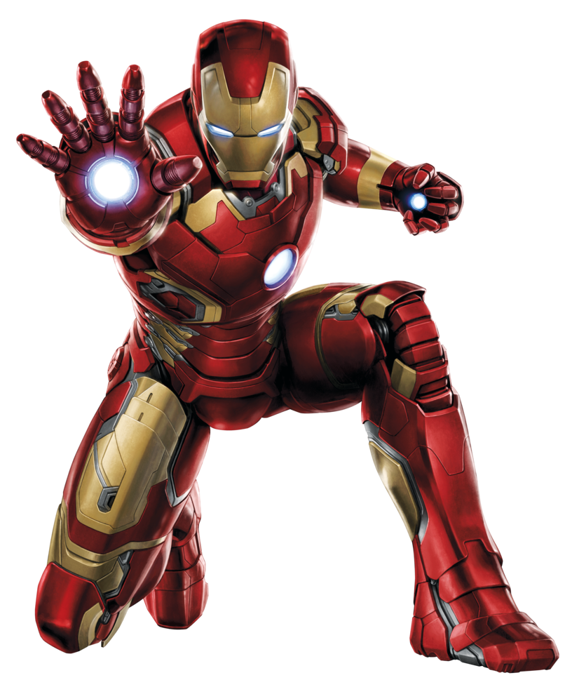

IDENTIFICATION
Peter Parker
ORIGIN
Foi picado por uma aranha geneticamente modificada, adquirindo habilidades semelhantes às de uma aranha.
PRIMARY WEAPON
Lança-teias, sentido aranha, grande agilidade, força sobre-humana e inteligência para criar equipamentos.


PSYCHOLOGICAL PROFILE
Vive dividido entre sua vida pessoal e a responsabilidade de ser um herói, carregando a culpa pela morte de seu tio Ben.
WEAKNESSES
Sua preocupação constante com familiares e amigos pode ser explorada pelos inimigos. Além disso, ainda possui limitações humanas.